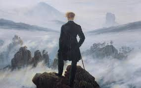

Dashboard
Bem-vindo de volta, Tommy Shelby.
Meus Posts
Ver todos-

Friedrich Nietzsche: vida, obras e pensamento
Conheça a trajetória de Nietzsche, suas principais obras e as ideias que transformaram a filosofia ocidental.
10 de agosto de 2026 -
Deus está morto: o que Nietzsche realmente quis dizer?
Entenda o significado filosófico da famosa declaração de Nietzsche e sua relação com a crise dos valores tradicionais.
3 de agosto de 2026 -
O Übermensch: o conceito de além-do-homem
Explore a ideia do Übermensch em Nietzsche e sua relação com a superação de si mesmo e a criação de novos valores.
28 de julho de 2026 -
Vontade de potência: a força por trás da vida
Entenda um dos conceitos centrais do pensamento nietzschiano e suas diferentes interpretações.
20 de julho de 2026 -
Eterno retorno: você viveria sua vida novamente?
Uma análise do conceito de eterno retorno e do desafio de afirmar a própria existência.
15 de julho de 2026
Meus Materiais
Ver todos-
Resumo — Assim Falou Zaratustra
Resumo dos principais conceitos presentes em uma das obras mais conhecidas de Nietzsche.
9 de agosto de 2026 -
Guia — Genealogia da Moral
Material de apoio para compreender a investigação de Nietzsche sobre a origem dos valores morais.
2 de agosto de 2026 -
Mapa mental — Conceitos de Nietzsche
Mapa mental com os principais conceitos: niilismo, vontade de potência, eterno retorno, Übermensch e transvaloração.
27 de julho de 2026 -
Resumo — Além do Bem e do Mal
Material introdutório sobre a crítica de Nietzsche à moral, à verdade e aos filósofos dogmáticos.
19 de julho de 2026 -
Ficha de leitura — O Anticristo
Principais argumentos e críticas presentes na obra, com contexto para compreender sua filosofia.
12 de julho de 2026